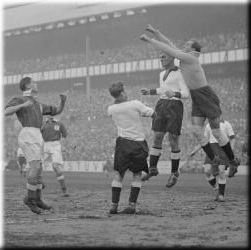

Friday, October the 7th, 2011
back to: title, date or indexes

There were afternoons at football, I'm not kidding, when the action on the pitch provided roughly the same excitement as watching week-old kittens failing to get out of paper bags.
Lynne Truss, Get Her Off The Pitch! : How Sport Took Over My Life (2009)